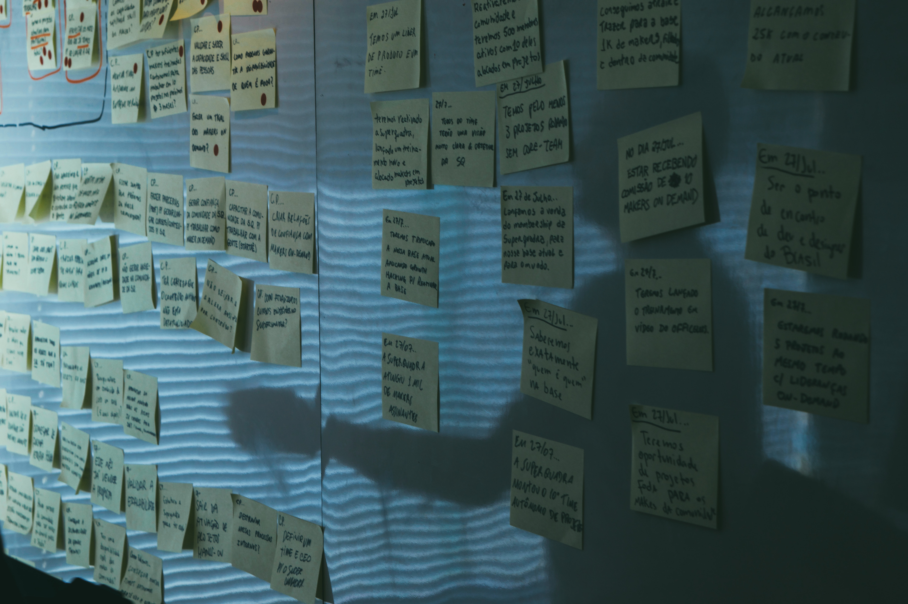

Welcome to my website
Hey there, my name is Varun Varia. I am a graduate student aspiring to be a data scientist and software developer. I use this site to share some of my work and learning. I love dad jokes, trying new food, and finding ways to work with my hands. In my free time I love to workout, watch anime, click some good pictures, drive sport cars, and learn a new language. If you have feedback or would like to discuss my work, I can be reached by email at thevarunvaria@gmail.com or through Linkedin.

HMIS (Homeless Management Information System) is software application that records all housing services provided to individuals and families seeking federally funded homelessness assistance. HMIS stores client-level data and data on the provision of housing and services to homeless individuals and families and persons at risk of homelessness and must comply with the U.S. Department of Housing and Urban Development (HUD) data collection, management, and reporting standards. HMIS Datasets often contain a lot of column that are encoded using identifiers. To understand the meaning of a particular value, one has to look it up in the HMIS data dictionary.
With multiple columns being encoded with some of them taking 35+ possible values, it is difficult to remember what each value represents. addLongName function will insert a column looking up its value from the data dictionary and insert it next to the column you passed. Returns a DataFrame with additional LongName column.

This project is work in progress. Details will be out soon.

Developed a predictive tool to empower U.S. military veterans succeed in civilian workforce. Using classification, variable selection and Survival analysis to recommend factors to be considered by Hire Heroes while looking at strategizing and understanding their client requirements better. Utilized RStudio for data integration, analysis, and modeling. Tableau and Excel were used for exploratory analysis and visualizations. Due to the imbalance in data for the target variable, AUC was used as the measure for validating the performance and the final model has given 0.929 AUC. Used survival analysis to understand the importance and significance of assigning specialists who were in charge of helping the clients through the hiring process.

Got an opportunity to contribute research vision of Dr. Wlodek Zadrozny (College of Computing and Informatics). The end result is to identify and quantify conceptual similarity of medical guidelines across different medical journals. My responsibility was to visualize the distance between these guidelines. I created chord diagram using D3.js to visually represent of conceptual similarity of 21 cardiovascular medical guidelines. Built an interactive Bar-chart to analyze text similarity metrics- cosine similarity, ranks, scores of Breast cancer guidelines in Tableau. I also wrote a draft paper under the guidance of Dr. Zadrozny about the purpose of the search, visualization techniques used, and results obtained.

The purpose of this project was to put ourselves in the shoes of SEC while still wearing the Big Data hat. Our task was to analyze the “blue sheets” as well as the articles that are published by big companies and also the materials used by these companies/individuals to make decisions on the trading activities. Implemented an unsupervised learning model in Python. User story: SEC using Big data tools to monitor financial activity of Trading platforms. Applying NLTK for parts of speech tagging, chunking and building word clouds. Executing Cosine similarity, topic modeling and text summarization. Using various Big Data tools for data cleaning and building model on the corpus and presenting the results.
Putting ourselves in the shoes of an individual or an organization searching for a dataset, there are multiples features that can make this process easy for the client. My team did a case study on early days of Kaggle where we would design an interface for the user to generate appropriate data set and also filter the results based on his requirements. We used Tableau to visualize size, location of the dataset, number of features and age of the dataset. Using D3.js, we designed a dynamic word cloud which tells the user what the dataset is about and also generates topics for all the datasets present in the database.
Ever since I moved to the city of Charlotte, I have fallen in love with every square inch of it. Like other cities, the city of Charlotte faces some problems. Motivated to fight the issue of drug abuse, I participated in a hackathon organized by ABD Society that strives to develop educational programs that model effective data use and functional business strategies. During the 24-hour coding marathon, we tackled the problem of drug abuse using analytical tools to accurately predict whether patients will complete treatment, as well as their length of stay. Built an engineering solution that allows a user to interact with the model or enable the model to serve decisions to an application.
For this project, our team performed the task of mining health news text corpus to detect a feeling of surprise. Activities included cleaning the data by removing stop words, preparing the data by selecting appropriate feature sets and visualizing using plots in R also Using topic modeling and classification (kNN and Näive Bayes) for building correct feature sets. Preparing models using machine learning algorithms (SVM and Random Forest) to predict surprise rating of the articles. Challenging part of this project was to find correct features to help us correctly predict the surprise rating. We used multiple demographic features which gave us the most accurate results.